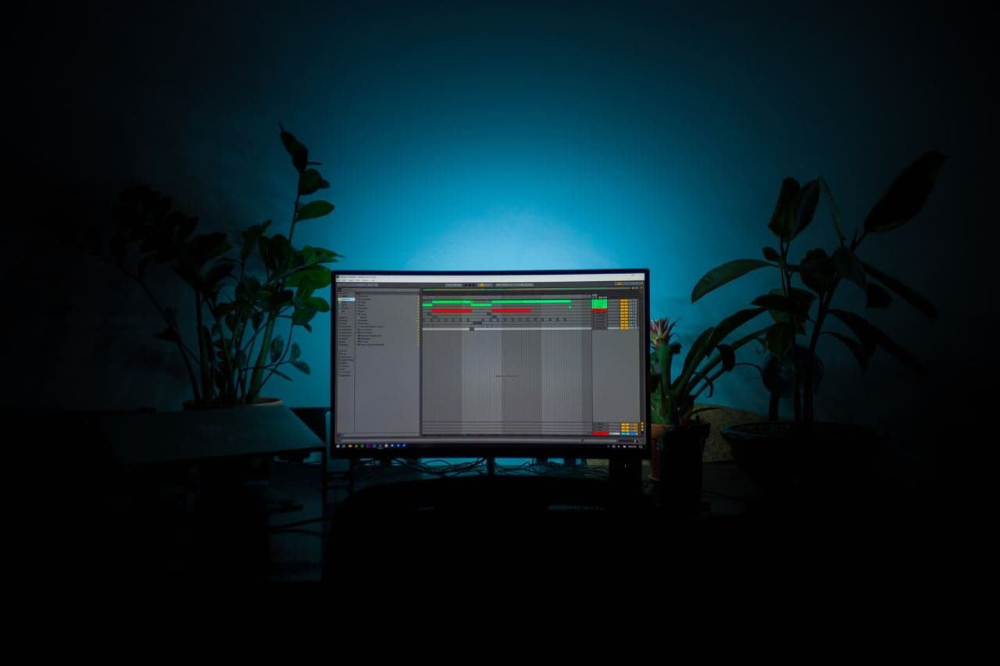
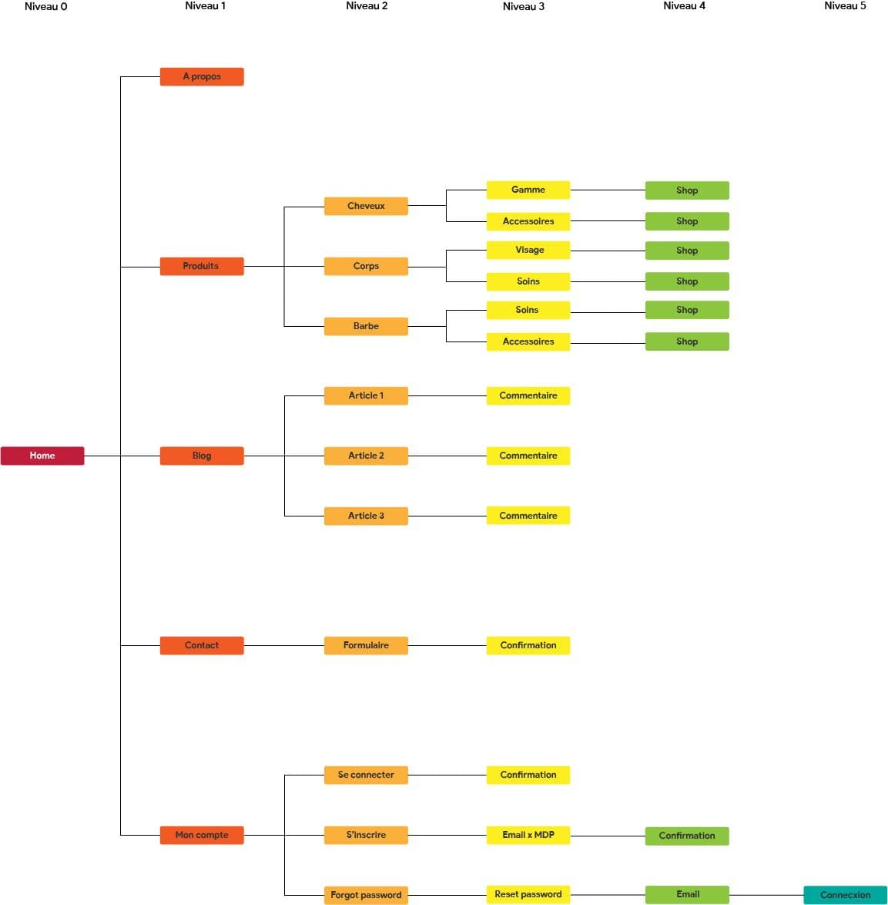

Karibbean Care
Cahier des charges
2021
Version 1.1

Je vous propose une petite playlist pour accompagner votre lecture
C'est un projet qui a été réalisé dans le cadre de la validation de ma formation à Philiance pour le titre de webdesigner
Karibbean Care
Cahier des charges
2021
Version 1.1
C’est une gamme de cosmétiques capillaire et corporel à base d’huiles et de beurre naturels à destination des personnes aux cheveux crépus ou portant des dreadlocks. Ainsi qu’une gamme d’accessoires à destination des utilisateurs de la gamme.
Les enjeucx et objectifs du projet vont être exprimés avec la méthode SMART : Spécifique : L’objectif est de lancé un site web de vente de produits cosmétique notamment un baume capillaire. Mesurable : L’objectif premier lors du lancement du projet est d’atteindre 2 000 visites dès les 4 premiers mois après le lancement. Puis les 6 mois suivant, convertir 5 % des prospects en clients ayant acheter au minimum un baume. Actionnable : L’onjectif est totalement actionnable. Les savoirs et compétences nécessaires à la réalisation du projet sont dispensés par Philiance Formation. Il est nécessaire de savoir que je complète mes connaissances avec les ressources diverses tel que Youtube, Google, Udemy et Tuto.com. Réaliste : L’objectif est totalement réalisable. Il a été pensé depuis un certain temps mais je ne disposais des connaissances nécessaire afin de le mener à bien. Aujourd’hui grâce à Philiance Formations je suis bien plus confiante à la réalisation de celui-ci. Il faut ajouter que les circonstances actuelle de crise sanitaire ont poussé les gens à prendre davantage soins d’eux. Temporel : Comme le dit Cyril Northcote Parkinson (historien et auteur de la Loi de Parkinson), toutes tâches s’étalent de façon à occuper le temps disponible pour son achèvement. Je me suis donc fixée une durée de 5 mois afin de réaliser le site web de manière complète.
Le projet sera mené grâce à la technique de gestion de projet du diagramme de Gantt. Par soucis d’affiche une liste est présente ci-dessous mais le diagramme de Gantt reste dispoble sous lien Google Drive. > Livrable #1 : Présentation du projet - Date de livraison : le 06 Septembre 2021 ; > Livrable #2 : Cahier des charges - Date de livraison : le 20 Septembre 2021 ; > Livrable #3 : Charte graphique - Date de livraison : le 04 Octobre 2021 ; > Livrable #4 : Charte éditoriale - Date de livraison : le 11 Octobre 2021 ; > Livrable #5 : Wireframe - Date de livraison : le 25 Octobre 2021 ; > Livrable #6 : Maquette graphique - Date de livraison : le 08 Novembre 2021 ; > Livrable #7 : Test utilisateur - Date de livraison : le 14 Novembre 2021 ; > Livrable #8 : Intégration HTML x CSS - Date de livraison : le 29 Novembre 2021 ; > Livrable #9 : Test utilisateur x Itération - Date de livraison : le 05 Décembre 2021 ; > Livrable #10 : Intégration Javascript - Date de livraison : le 24 Décembre 2021 ; > Livrable #11 : Test utilisateur x Itération - Date de livraison : le 07 Janvier 2022 ;
Pour réaliser l’étape du benchmark, j’ai sélectionné 2 entreprises qui sont :
Premier critère : le site web Je constate que malgré sa réputation la marque Mango & Lime n’a pas de sites propres, mais au contraire elle est présente sur plétores de sites de revendeurs. C’est peut-être la une stratégie marketing liée directement au référencement web. Niousha Bantoo parcontre possède son propre site internet.
Second critère : les gammes proposées Mango & Lime propose des gammes capillaire très variée allant des cheveux crépus au cheveux lisses, des bouclés comme des raides. Niousha Bantoo propose differentes gammes, 5 au total : pour les locks, les hommes, les enfants, les nappy et pour finir une gamme pour les soins corporels.
Troisième critère : l’application mobile Aucun des deux concurrents cités précedemment n’ont d’application mobile. Je peux donc me demander si il est pertinent pour une gamme de cosmétique naturelle d’en posséder une.
Pour conclure ce benchmark, je dirais que la concurrence dans le domaine des cosmétiques est très féroce. Le marché est en constante évolution (marché estimé à 12 milliards de dollar selon la source Ecovia Intelligence), ceci est certainement dût aux confinements à répétitions qu’à subi la population. Les cosmétiques naturelles à destination de la communauté noire est pleine explosion. Étant riche d’une flore empli de bienfaits tant pour le corps que les cheveux, les petites entreprises se multiplie afin de proposer leur recette miracle pour résoudre la problématique de cosmétiques à destination de la commnauté noire. Et c’est exactement sur ce secteur que se place Karibbean Care. Une marque à destination de la population caraîbeenne, fabriqué de matière premières issus des sols caraibeen. Suite au benchmark réalisé, je partirai d’abord sur un baume capillaire ayant déjà fait quelques preuves près d’un segment de la population. Puis, de nouvelles gammes seront proposé afin de satisfaire à toutes les demandes des prospects potentiel. Les differentes gammes qui devraient voir le jour :
